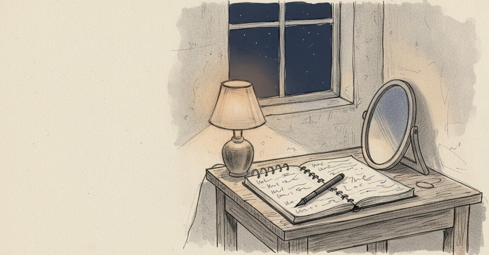

『騙されたと思って継続』と書いた夜から、評価しないAIを設計するまで

2024年9月2日、夜の熊本のビジネスホテルでノートを開いた。15時にチェックインして、心地よい時間を過ごしていた。「瞑想を始めてみる」と書いた。5分が、思いの外早く感じた。
今日の現場
2026年4月2日、モヤログv2の設計書を確定した。LINEで動く、感情の鏡。
ユーザーが6つの感情から1つを選ぶ。「しんどい」「イライラ」「モヤモヤ」「自分がイヤ」「疲れた」「理由がわからないけどしんどい」。AIはそれを評価しない、励まさない。ただ映し返す。
設計書には「使わない言葉」のリストも書いた。「大丈夫」「頑張って」「なんで」「当然」「普通は」。共感を演じない、というのが核にある。
ゴールは、自分を責める人が、自分で何でもできると思えるようになること。手放せるほど自立した状態を、「卒業」と呼ぶことにした。卒業がプロダクトの成功指標で、それ以外は全部おまけだ。
通知で迫らない。メニューにそっと置く。売るのではなく、気づかせる。設計書の最後の方にそう書いた。
あの頃と今
1年7ヶ月前のノートに戻る。
その日は朝から電話対応に追われ、休日なのに職場に顔も出した。昼は焼肉ライクで1290円、ご飯おかわりつき。夜は惣菜とサラダで300グラムの野菜を取った。dラボでAI担当の方の講座を聞いて、愛されキャラだなと笑った。日常の具体は、たぶん何でもない一日だった。
その夜、ノートにこう書いている。
「もう少し客観的に物事を考えるようになるといいなと思う」「やはり元カノに執着してしまう面が垣間見える」「改善しなきゃ」「セルフトークも最近失っていたなと反省」「瞑想を始めてみる」「5分が思いの外早く感じた」「呼吸に意識を向けながらも余計なことも考えてしまうが、それも客観視できる感覚はある」「騙されたと思って継続することが大切」「何が大切なのか見失わないこと」
その夜の私は、自分の執着を「改善しなきゃ」と書いた。書いて、5分の呼吸に置いた。誰も評価しなかった。誰も「大丈夫」と言わなかった。
頭の中
もやログのAIは「大丈夫」と言わない。「頑張って」とも言わない。あの夜の私が一番欲しくなかった言葉だからだ。「客観視できる感覚」だけが、続けるための一本の糸だった。励まされたら、その糸が逆に切れる気がしていた。
別の見方もある。本当に「鏡」だけで人は卒業まで辿り着けるのか。誰かに「大丈夫」と言ってほしい瞬間も、たぶんある。それでもAIにはそれをさせない、という設計を、今は選んでいる。間違っているかもしれない。
それでも、あの夜の私のような人が、5分の呼吸に置けるだけの場所を、ひとつ用意したい。
まだ途中のこと
「騙されたと思って継続することが大切」と1年7ヶ月前の私が書いた。今そのノートを開けて、笑いそうになった。同じことを今、別のかたちでやっている。
設計書には「卒業」を最大の成功指標と書いたが、卒業した人はもうこのアプリを開かない。それでいいと書きながら、本当にいいのかなと思っている自分もいる。
自分を責める誰かのために、こういう場所を作っています。
#日記 #ジャーナリング #瞑想 #個人開発 #AkariLab